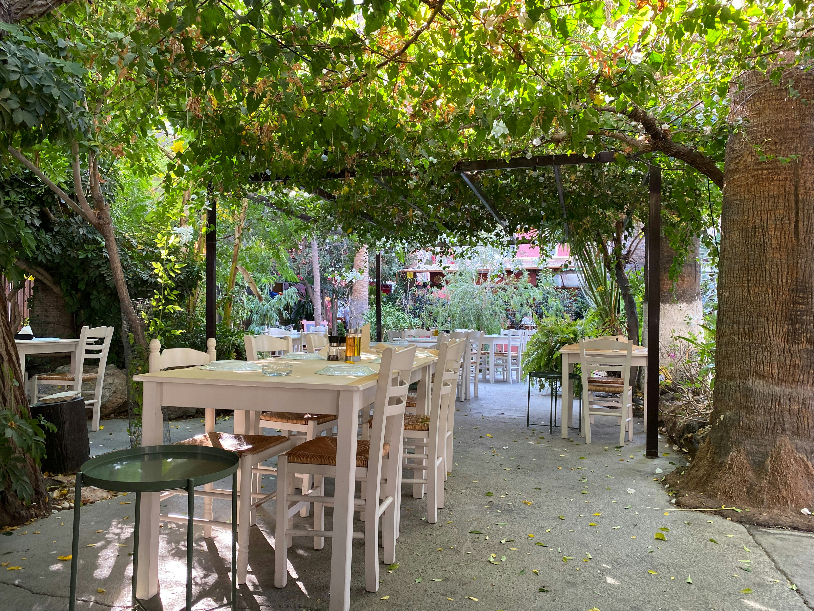

Green Garden Bistro
Cuisine: Modern Australian | $35–$55 per person
Green Garden Bistro focuses on fresh, seasonal produce from local farms across Victoria. The relaxed atmosphere, sunny patio, and open kitchen make it ideal for casual lunches and weekend brunches. Families and couples enjoy the welcoming staff, vegetarian-friendly menu, and thoughtfully plated dishes that highlight natural flavours without heavy sauces.
- Garden Salad — $18
- Grilled Salmon — $32
- Pumpkin Risotto — $26
Deposit: $25
Reserve